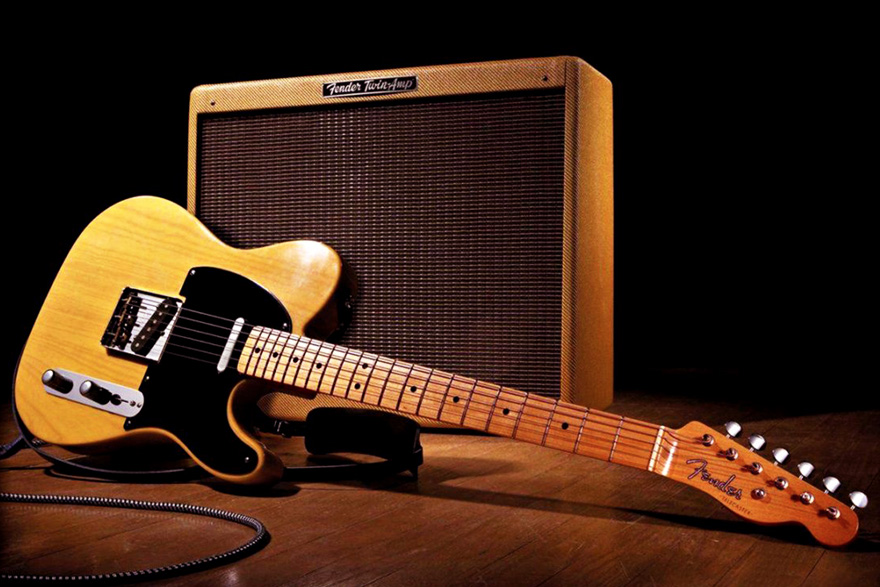
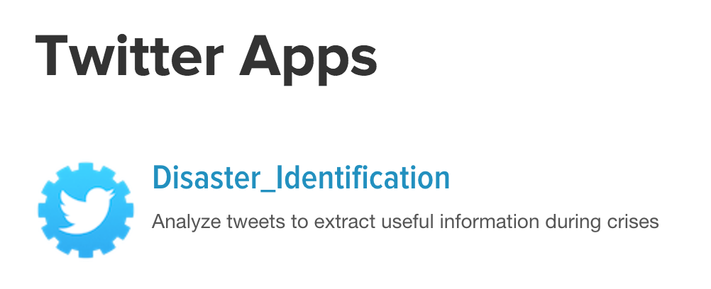
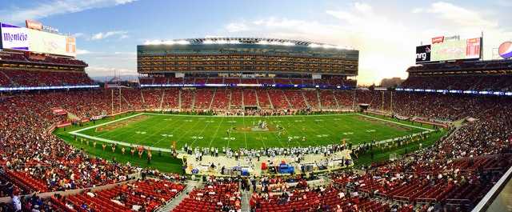

Portfolio
Clasificador de instrumentos
Twitter Disasters
Scraping AMPROFON Table
Super Bowl
Word Cloud STP

Scraping music news from CNN

Art - Technology - Data
Data Science Fan, focused on find insights within any kind of data in order to make data driven decisions. I like Arts, the Technology and the intersection between them. I consider myself an avid learner
I’m currently learning Data Science at Platzi Master. Platzi is the biggest online education platform in Latin America, with more than 1,000,000 subscribers in 2020. Platzi Master is an intensive training program with top industry mentors. A program in which only 2% of students are accepted.